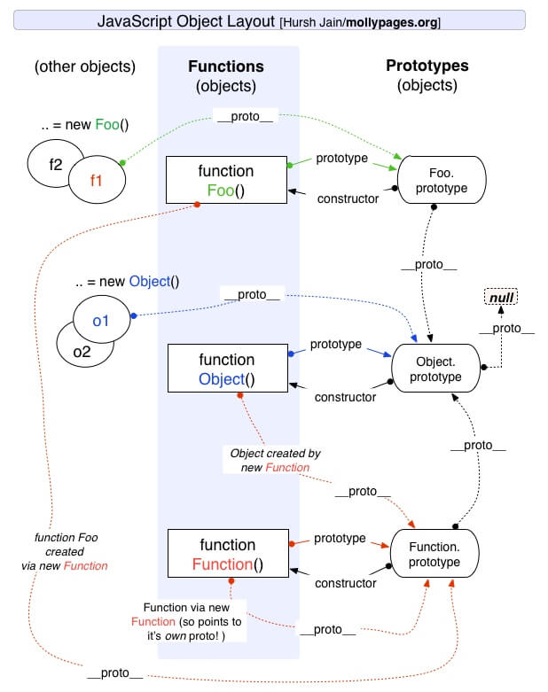
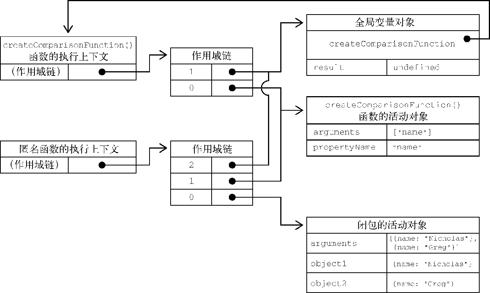

《JavaScript 高级程序设计（第四版）》读书笔记（第 8-11 章）
书接上回，本文为第 8-11 章的笔记。
第 8 章 - 对象、类与面向对象编程
- Page 530ECMAScript 使用一些内部特性来描述对象属性的特征。
- 数据属性：
- [[Configurable]]：表示属性是否可以通过
delete删除并重新定义，是否可以修改它的特性（若设为 false 则无法再被修改回来），以及是否可以把它改为访问器属性。默认为 true； - [[Enumerable]]：表示属性是否可以通过 for-in 循环返回。默认为 true；
- [[Writabe]]：表示属性值是否可以被修改。默认为 true；
- [[Value]]：包含属性实际的值。
- [[Configurable]]：表示属性是否可以通过
let person = {};
Object.defineProperty(person, 'name', {
writable: false,
enumerable: false,
configurable: true,
value: 'Jason Yu',
});
- 访问器属性（不包含数据值，不能与“数据属性”混用）：
- [[Configurable]]：（同上）；
- [[Enumerable]]：（同上）；
- [[Get]]：获取函数，在读取属性时调用（不设置则不可读）；
- [[Set]]：设置函数，在写入属性时调用（不设置则不可写）。
let foo = {
name: 'Jason',
}
Object.defineProperty(foo, 'nickname', {
enumerable: true,
configurable: true,
get() { return this.name; },
set(value) { this.name = value; },
});
// 与上述等价的 ES6 写法；
// let foo = {
// name: 'Jason',
// get nickname() { return this.name; },
// set nickname(value) { this.name = value }
// }
- Object.hasOwnProperty() 可用于检测某个属性是否定义在调用对象上（而非原型对象上）；
- Object.defineProperties() 可用于批量定义多个属性；
- Object.getOwnPropertyNames() 可用于列出所有实例属性（不包括符号），无论是否可枚举；
- Object.getOwnPropertyDescriptor() 可用于获取指定实例属性的属性描述符；
- Object.getOwnPropertyDescriptors() 可用于批量获取指定对象的实例属性描述符；
- Page 540对象操作：
- 合并操作（
Object.assign）：- 可以将每个源对象中的可枚举（Object.propertyIsEnumerable() 返回 true）和实例属性（Object.hasOwnProperty() 返回 ture）复制到目标对象；
- 执行的是“浅复制”，对于引用类型的成员，只会复制对其的指针；
- 在复制“访问器属性”时，若源对象没有对应该属性的 setter，则该属性可能被复制为一个“数据属性”；
- 若该函数在复制中途出错，则可能只会复制源对象中的部分属性；
- 比较操作（
Object.is）：- 与 “===” 类似，但考虑到了一些边界情况，比如 “NaN 和 NaN”、“+0 和 -0” 的相等性判断；
console.log(Object.is(+0, -0)); // false.
console.log(Object.is(+0, 0)); // true.
console.log(Object.is(-0, 0)); // false.
console.log(Object.is(NaN, NaN)); // true.
- 解构操作：
- 解构会将原始值转换为对象，根据标准 null 和 undefined 无法被解构；
let person = {
name: 'Jason',
age: 27,
};
let { name: personName, age: personAge, job: personJob = 'engineer' } = person;
console.log(personName, personAge, personJob);
- 在解构过程中，如果为了给事先声明的变量赋值，则赋值表达式必须被包含在一对括号中；
let personName, personAge, personJob;
let person = {
name: 'Jason',
age: 27,
};
({name: personName, age: personAge, job: personJob = 'engineer'} = person);
console.log(personName, personAge, personJob);
- 解构也可以用在函数参数中。
let person = {
name: 'Jason',
age: 27,
};
function printPerson(id, { name, age }) {
console.log(id, name, age);
}
printPerson(1, person);
- Page 563ECMAScript 实现类的几种方式：
- 构造函数模式：
- 问题：其定义的方法会在每个实例上都创建一遍；
function Person(name, age) {
this.name = name;
this.age = age;
this.sayName = function() {
console.log(this.name);
}
}
let p = new Person('Jason', 27);
p.sayName();
console.log(p instanceof Person); // true.
console.log(p instanceof Object); // true.
- 原型模式：

- 每个函数都会创建一个 prototype 属性，指向其原型对象（显式原型）。这个属性包含该由特定引用类型的实例共享的属性和方法。每次创建一个新对象时，对象内部的隐式原型指针 “__proto__” 都会指向构造该对象的那个函数的显式原型；
- prototype 原型链上的 constructor 与构造函数自身循环引用；
isPrototypeOf仅在传入参数的隐式原型指向调用它的对象时返回 true；Object.getPrototypeOf可以获取一个参数的隐式原型；- 使用
Object.create创建对象可以同时为新对象指定隐式原型；
function ObjCreate(o) {
function F(){};
F.prototype = o;
return new F();
}
- 实例上创建的属性会遮盖原型上的同名属性；
in操作符（for-in 类似）可用于检测对象的某个属性是否可访问（只要可枚举，无论是在对象还是在原型对象上）；相反，Object.keys可用于获得对象的所有可枚举实例属性，而非原型属性；Object.getOwnPropertyNames更进一步，不可枚举属性也会被返回；- Object.getOwnPropertyNames \ Object.getOwnPropertySymbols \ Object.assign 的枚举顺序是固定的：先以升序枚举数值键，再以插入顺序枚举字符串和符号键；
- 不要在生成对象后，以字面量对象的形式完全重写构造函数的整个原型（否则先前对象内部保有的隐式原型指针将会失效）。
function Person(name, age) {
this.name = name;
this.age = age;
}
Person.prototype = {
sayName() {
console.log(this.name); // stay on the prototype.
}
};
Object.defineProperty(Person.prototype, 'constructor', {
enumerable: false, // keep consistent.
value: Person,
});
let p = new Person('Jason', 27);
- Page 600继承：
- ECMA-262 把“原型链”定义为 ECMAScript 的主要继承实现方式；
instanceof运算符用于检测构造函数的 prototype 属性是否出现在某个实例对象的原型链上（跟 constructor 无关）；- 组合式继承：最常用的一种方式；
function SuperType(name) {
this.name = name;
}
SuperType.prototype.sayName = function() {
console.log(this.name);
}
function SubType(name) {
SuperType.call(this, name); // keep private members.
}
SubType.prototype = new SuperType(); // inherit common methods.
new SubType('Jason').sayName();
- 原型式继承：适用于“不需要单独创建构造函数，但仍然需要在对象间共享信息”的场合；
let person = {
name: 'Jason',
};
let anotherPerson = Object.create(person, {
name: {
value: 'Greg',
}
});
- 寄生式组合继承：效率较高。
function inheritPrototype(subType, superType) {
let proto = Object.create(superType.prototype);
proto.constructor = subType;
subType.prototype = proto;
}
function SuperType(name) {
this.name = name;
this.colors = ['red', 'green'];
}
SuperType.prototype.sayName = function() {
console.log(this.name);
}
function SubType(name, age) {
SuperType.call(this, name);
this.age = age;
}
inheritPrototype(SubType, SuperType);
SubType.prototype.sayAge = function() {
console.log(this.age);
}
- Page 622类（语法糖）：
- 类定义无法被提升（不同于函数定义）；
- 函数受函数作用域限制，类声明受块作用域限制；
- 默认情况下，类构造函数会在执行之后返回 this 对象，该对象会被用作实例化的对象；
- 生成类对象的过程相当于对该类的构造函数使用 new。类构造函数必须使用 new 操作符，而普通构造函数如果不使用 new，则会以全局 this 作为其内部对象；
- 在派生类的静态方法中，可以通过
super引用父类上的静态方法。super 只能用在派生类的静态方法和构造函数中；
class Person {
constructor(name, nicknames) {
this.name = name;
this.nicknames = nicknames;
}
sayName() {
console.log(this.name);
}
*sayNicknames() {
yield* this.nicknames;
}
static generatePerson(name, nicknames) {
return new Person(name, nicknames);
}
set inc(value) { // setter.
while(value--) {
this.name += '+';
}
}
get inc() { // getter.
return this.name.length - this.name.indexOf('+');
}
};
Person.tag = 'PersonClass'; // static property.
Person.prototype.rank = 100; // commom property (anti-pattern).
const p = Person.generatePerson('Jason', ['Jack', 'Jake']);
// 继承；
class Chinese extends Person {
constructor(name, nickname, age) {
super(name, nickname); // will return a "this" of the derived instance.
this.age = age;
}
sayAge() {
console.log(this.age);
}
};
const c = new Chinese('Jason', ['Jack', 'Jake'], 27);
c.sayAge();
- 可以用
new.target（保存通过 new 关键字调用的类或函数）来实现“抽象基类”：
class Vehicle {
constructor() {
console.log(new.target);
if (new.target === Vehicle) { // "new.target" points to constructor.
throw new Error('Error...');
}
}
};
第 9 章 - 代理与反射
- Page 661代理：
- Proxy 对象无法使用 instaceof 操作符（没有 Proxy.prototype）；
- Proxy 中所有可以捕获的方法都有对应的“反射”接口（Reflect）。这些接口与捕获器拦截的方法具有相同的名称和函数签名，而且也具有相同的行为；
- 某些反射方法（如 Reflect.defineProperty）会通过返回布尔类型的“状态标记”来代替 Object 上原始 API 的抛出错误行为。某些情况下可用于优化应用流程；
- 某些反射方法可用于替代操作符：
- Relfect.get() - ./[]；
- Relfect.set() - =；
- Relfect.has() - in/with；
- Relfect.deleteProperty() - delete；
- Relfect.construct() - new；
const target = {
foo: 'bar'
};
const handler = {
get(target, property, proxy) {
return target[property];
},
set: Reflect.set,
}
const p = new Proxy(target, handler);
p.foo = 'jar';
console.log(p.foo);
// revocable proxy.
const { proxy, revoke } = Proxy.revocable(target, handler);
revoke(); // proxy is invalid after this.
- 可以为代理再添加另外一个代理；
- 通过 Proxy 访问对象的内部属性时，会改变对象引用的 this 值；
- 代理捕获器与反射方法：
- (Relfect.) get()：会在获取属性值的操作中被调用；
- (Relfect.) set()：会在设置属性值的操作中被调用；
- (Relfect.) has()：会在 in 操作符中被调用；
- (Relfect.) defineProperty()：会在 Object.defineProperty 中被调用；
- (Relfect.) getOwnPropertyDescriptor()：会在 Object.getOwnPropertyDescriptor 中被调用；
- (Relfect.) deleteProperty()：会在 delete 操作符中被调用；
- (Relfect.) ownKeys()：会在 Object.keys 及类似方法中被调用；
- (Relfect.) getPrototypeOf()：会在 Object.getPrototypeOf 中被调用；
- (Relfect.) setPrototypeOf()：会在 Object.setPrototypeOf 中被调用；
- (Relfect.) isExtensible()：会在 Object.isExtensible（可扩展，即可以添加新属性）中被调用；
- (Relfect.) preventExtensions()：会在 Object.preventExtensions 中被调用；
- (Relfect.) apply()：会在调用函数时被调用；
- (Relfect.) construct()：会在 new 操作符中被调用。
- 代理模式：
- 跟踪属性访问；
- 隐藏属性；
- 属性验证；
- 函数与构造函数参数验证；
- 数据绑定与可观察对象；
第 10 章 - 函数
- Page 707函数：
- 每个函数都是 Function 类型的实例（new Function()），因此函数名是指向函数对象的指针，且不一定与函数本身紧密绑定。
function Function(){}与function Object(){}这两个对象被浏览器特殊对待； - Function 构造函数，其最后一个参数始终会被当做函数体，其余均为该函数的参数；
- *箭头函数不能使用 arguments、super 和 new.target，也不能作为构造函数，并且也没有 prototype 属性；
- 如果函数是一个 setter、getter 或是使用
bind实例化的，则其 name 标识符上会增加一个前缀（set、get、bound）； - 对 arguments 中内容的修改会影响到命名实参的实际值（实际传入参数 -> arguments -> 命名实参，单向同步）；
- 函数的默认参数只有在函数被调用时才会求值，而非定义时求值；
- 函数声明提升：JS 引擎会先将发现的函数声明提升到源代码树的顶部（不同于“函数表达式”）；
this引用着将普通函数当成方法调用时的上下文对象。在箭头函数中，this引用的是定义箭头函数的上下文；arguments.callee指向 arguments 所在函数；arguments.caller指向调用当前函数的函数。两者在“严格模式”下均无法访问；- 命名函数表达式：
const factorial = (function f(num) {
if (num <= 1) {
return 1;
} else {
return num * f(num - 1);
}
});
- 尾递归调用的应用条件：严格模式下，并确定外部栈帧没有存在的必要（非严格模式下，函数调用允许 arguments 和 caller 参数，会引用外部函数的栈帧）；
- 闭包：引用了另一个函数作用域中变量的函数，通常在嵌套函数中实现；
- 典型的闭包：
function createComparisonFunction(propertyName) {
return function(x, y) {
let vA = x[propertyName];
let vB = y[propertyName];
if (vA < vB) {
return -1l
} else if (vA > vB) {
return 1;
} else {
return 0;
}
}
}
- 对应的作用域链关系：

- IIFE：可用于在 ES5 中模拟块级作用域；
第 11 章 - Promise 与异步函数
- Page 790Promise:
- ECMAScript6 增加了对 Promise/A+ 规范的支持，即
Promise类型； - Promise 状态机（状态变化只能单向传递，不可逆）：
- pending；
- fulfilled；
- rejected。
- 创建具有固定状态的 Promise（fulfilled / rejected）：
// Promise.resolve 静态函数是“幂等”的，而 Promise.reject 则不是（参数会被直接作为拒绝理由）；
let pA = Promise.resolve(1);
let pB = Promise.resolve(pA);
console.log(pA == pB); // true.
console.log(pA); // Promise {<fulfilled>: 1}.
pA.then(i => console.log(i)); // 1.
Promise.prototype.then(onResolved, onRejected)的返回值（在 Promise 结束之后）：- fulfilled：Promise.resolve([Promise fulfilled 返回值] / [onResolved() 返回值] / [undefined])；
- rejected：Promise.resolve([Promise rejected 返回值] / [onRejected() 返回值] / [undefined])。
Promise.prototype.catch(onRejected)是一个语法糖，在引擎内部会被转换为调用 then 方法的第二个参数。返回值与 then 的 “rejected” 情况一样；Promise.prototype.finally(onFinally)会在 Promise 解决或拒绝时执行。一般用于添加清理代码，正常返回值为对父 Promise 的直接传递，在抛出异常时，可以返回拒绝 Promise；- 非重入特性（non-reentrancy）：当一个 Promise 进入“落定状态”时，与该状态相关的处理程序（onResolved
\ onRejected \ catch \ finally）仅会被放入执行队列排期异步执行，而非立即执行。因此其后的同步代码一定会先于处理程序被执行； - 在 Promise 的执行函数或处理程序中抛出错误会导致拒绝，对应的错误对象会成为拒绝的理由。
// 几种常见的 reject 情况；
new Promise((resolve, reject) => reject(Error('foo')));
new Promise((resolve, reject) => {
throw Error('foo');
});
new Promise.resolve().then(() => {
// this way will create another Promise as a returning result.
throw Error('foo');
});
new Promise.reject(Error('foo'));
- Promise 的连锁可以构成一个“有向无环图（DAG）”。Promise 处理程序是先添加到队列，然后再逐个执行，因此构成了“层序遍历”；
Promise.all若有 Promise 拒绝，则只有第一个拒绝的 Promise 会将自己的理由作为合成 Promise 的拒绝理由。后续“拒绝”会被静默处理；- 取消令牌（Axios 等库采用的方式）：一种临时的封装，可用于实现“取消 Promise” 的功能。
class CancelToken {
constructor(cancelFn) {
this.promise = new Promise((resolve, reject) => {
cancelFn(resolve);
});
}
}
function foo(delay) {
return new Promise((resolve, reject) => {
const id = setTimeout(() => {
resolve(delay);
}, delay);
const cancelToken = new CancelToken((cancelCb) => {
// set up when to cancel the promise.
if (delay > 2000)
cancelCb();
});
// cancel the promise by clearing the timer.
cancelToken.promise.then(() => {
clearTimeout(id);
reject('Canceled');
});
});
}
foo(1000).then(v => console.log(v), v => console.log(v));
- Promise 进度通知：
class TrackablePromise extends Promise {
constructor(executor) {
const notifyHandlers = [];
super((resolve, reject) => {
return executor(resolve, reject, status => {
notifyHandlers.map(handler => handler(status));
});
});
this.notifyHandlers = notifyHandlers;
}
notify(notifyHandler) {
this.notifyHandlers.push(notifyHandler);
return this;
}
}
- Page 840异步函数：
async与await是语法糖（Syntactic Sugar）；- 使用
async标记的函数，在执行后默认返回 Promise 对象。而内部使用了await关键字的函数则必须被标记为 async； - 使用
await关键字可以暂停异步函数代码的执行，等待 Promise 解决，并尝试“解包”对象的值。JS 引擎在遇到该关键字时，会记录在哪里暂停执行，待值可用后，引擎会向消息队列中推送一个任务，这个任务会恢复异步函数的执行。因此，await 后面的表达式会被“异步求值”（先执行同步代码，再执行异步代码）； - 异步函数中发生的拒绝无法被 catch 捕获；
(async function() {
Promise.reject(1);
return;
})().catch(() => {}); // "reject" cannot be catched, but "throw".
- 常用场景：
- 实现 sleep() 函数：
async function sleep(delay) {
return new Promise(resolve => setTimeout(resolve, delay));
}
async function bar() {
await sleep(1500);
console.log('after sleeping...');
}
bar();